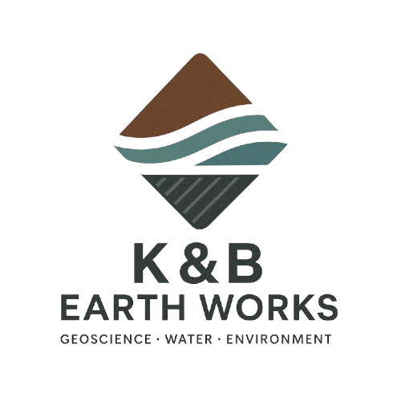
Geoscience · Water · Environment
Découvrez nos réalisations et projets en cours dans les domaines de la géoscience, l'environnement et l'ingénierie.
Retour à l'accueilRecherche scientifique
Un aperçu de nos interventions et expertises réalisées au Maroc et à l'international.
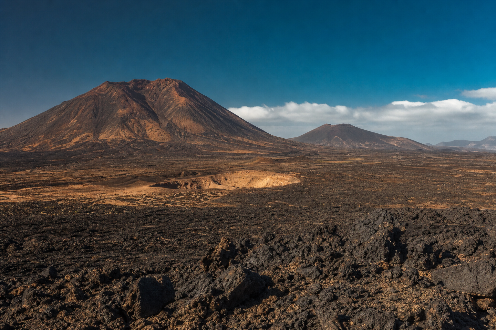
Volcanisme Néogène-Quaternaire du NW Afrique : Pétrogenèse, Contrôles Tectoniques et Évolution Géodynamique
Chapitre scientifique publié (Online First, IntechOpen) sur le volcanisme néogène-quaternaire du Nord-Ouest de l'Afrique : pétrogenèse, contrôles tectoniques et évolution géodynamique, avec modélisation géochimique, thermobarométrie et synthèse régionale des provinces volcaniques du Maroc et de l'Algérie occidentale.
Voir la publicationÉtudes & réalisations
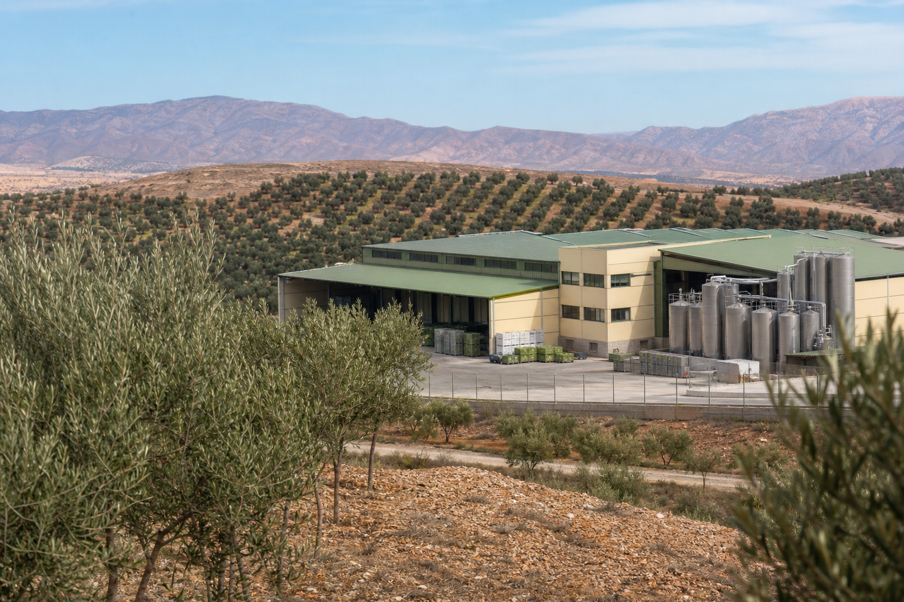
Réalisation d'une étude d'impact environnemental (EIE) complète pour une unité de conserve d'olives et de séchage de fruits secs, incluant l'analyse des rejets, la gestion des déchets et les mesures d'atténuation, conformément à la réglementation marocaine.
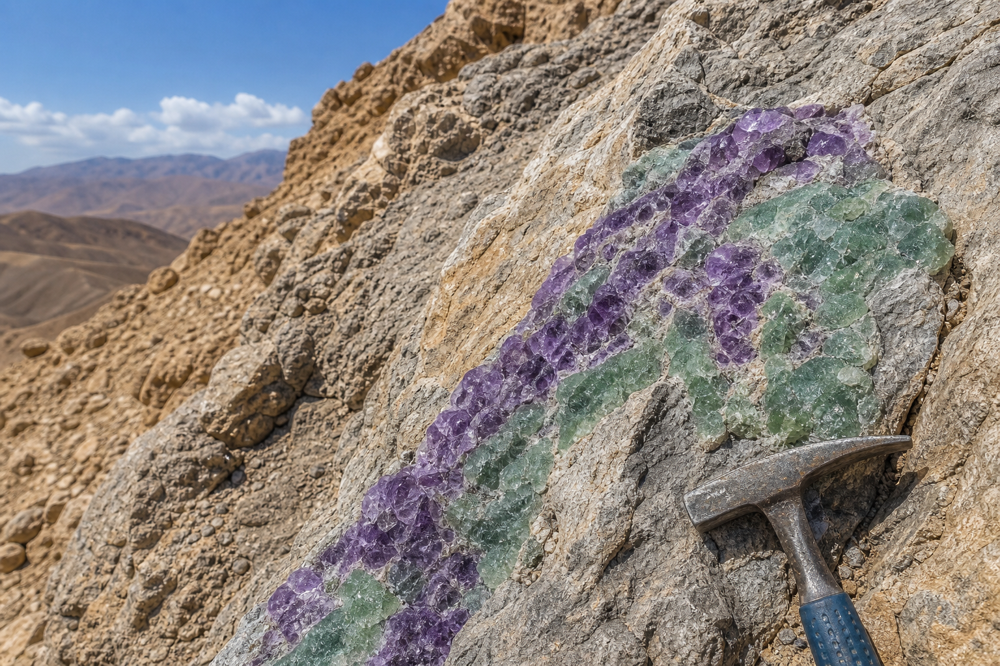
Étude géologique et géochimique de veines minéralisées en fluorite dans le Nord-Est du Maroc, avec cartographie structurale, analyses de terrain et caractérisation minéralogique pour l'évaluation du potentiel minier.
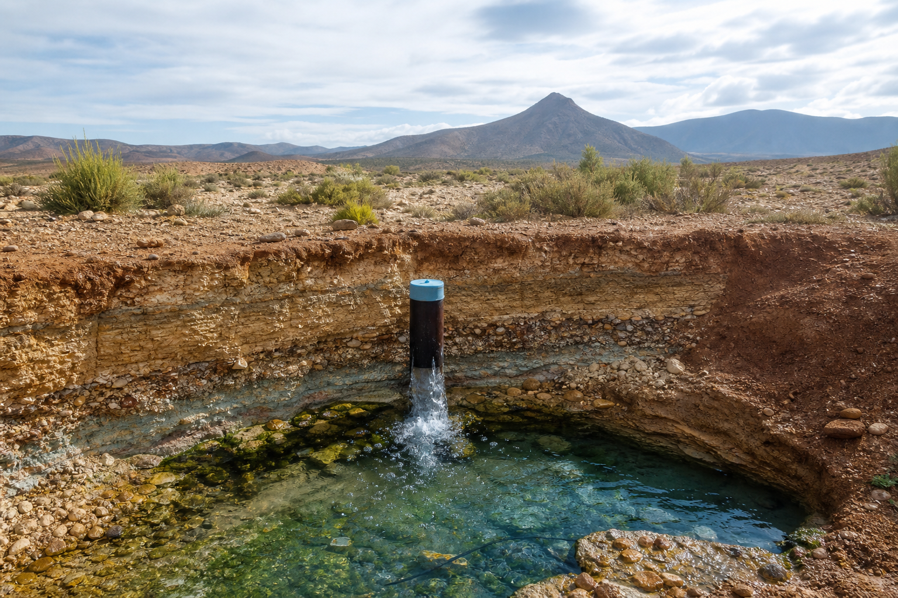
Investigation hydrogéologique pour l'identification et la caractérisation des aquifères, incluant la modélisation des écoulements souterrains et l'évaluation de la durabilité des ressources en eau.
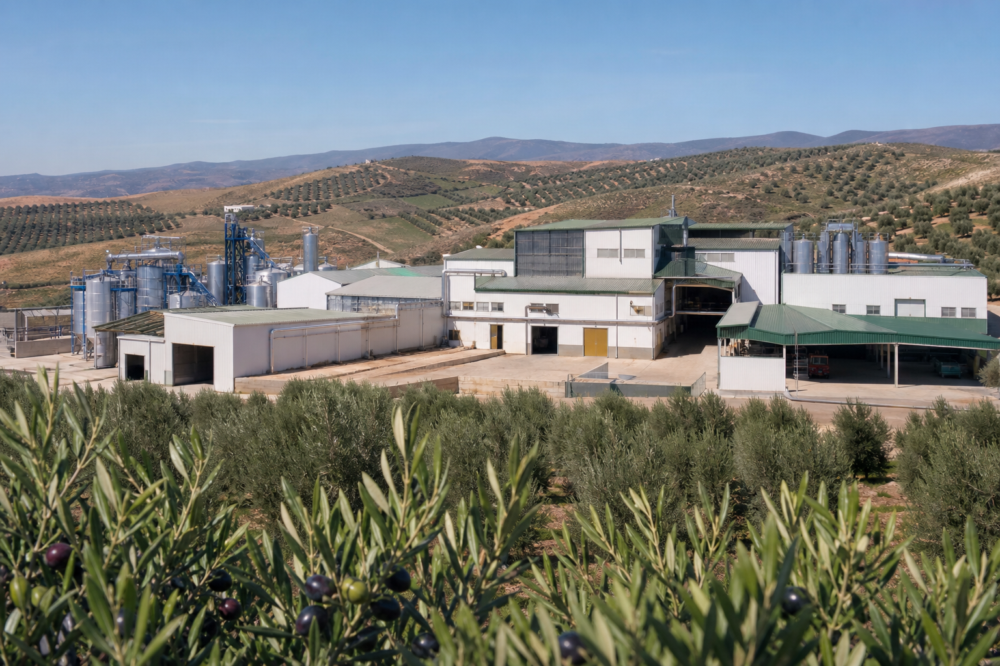
Étude d'impact environnemental pour une unité agro-industrielle de trituration d'olives et de transformation de légumes, avec analyse de conformité réglementaire, bilan hydrique et plan de gestion environnementale.
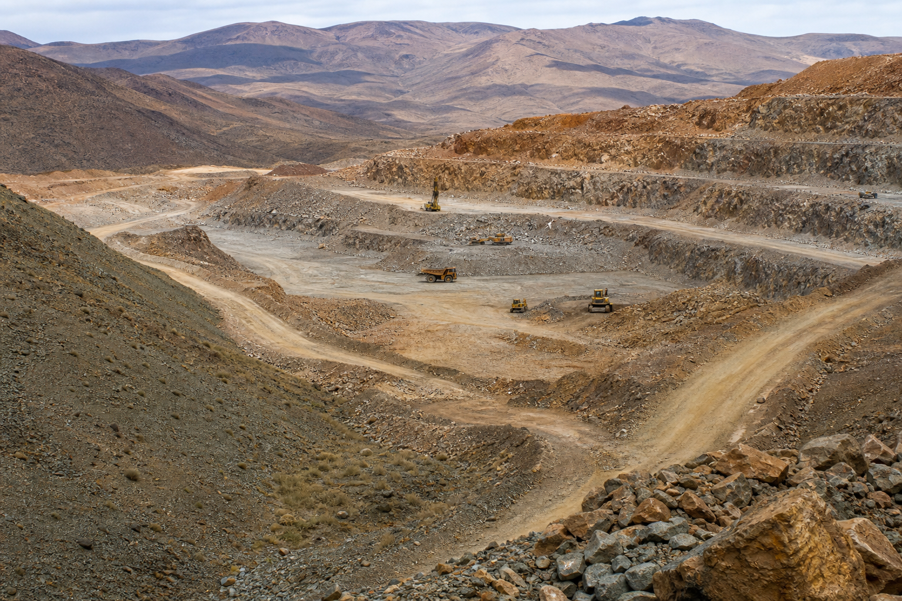
Accompagnement technique et administratif pour des sociétés minières, incluant la constitution de dossiers de permis, le suivi des opérations et la gestion des aspects environnementaux liés à l'exploitation.
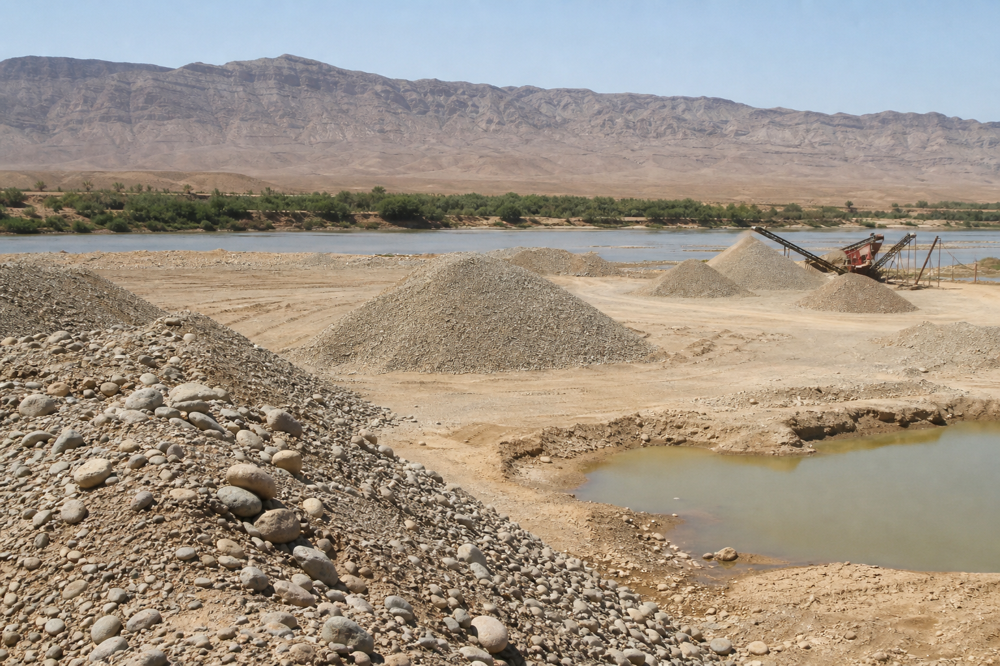
Projet d'exploitation d'une ballastière temporaire sur l'Oued Moulouya pour l'extraction de matériaux de construction au profit des travaux publics, incluant l'étude de faisabilité, le dossier réglementaire et le suivi environnemental.
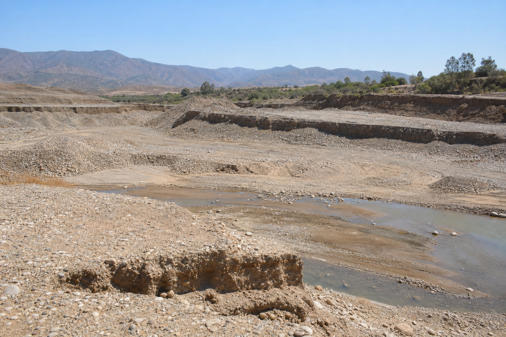
Projet d'exploitation d'une carrière alluvionnaire sur l'Oued Aïch, commune d'El Barkanyene, province de Nador : études géologiques, dossier d'autorisation et accompagnement technique pour l'extraction des matériaux alluvionnaires.
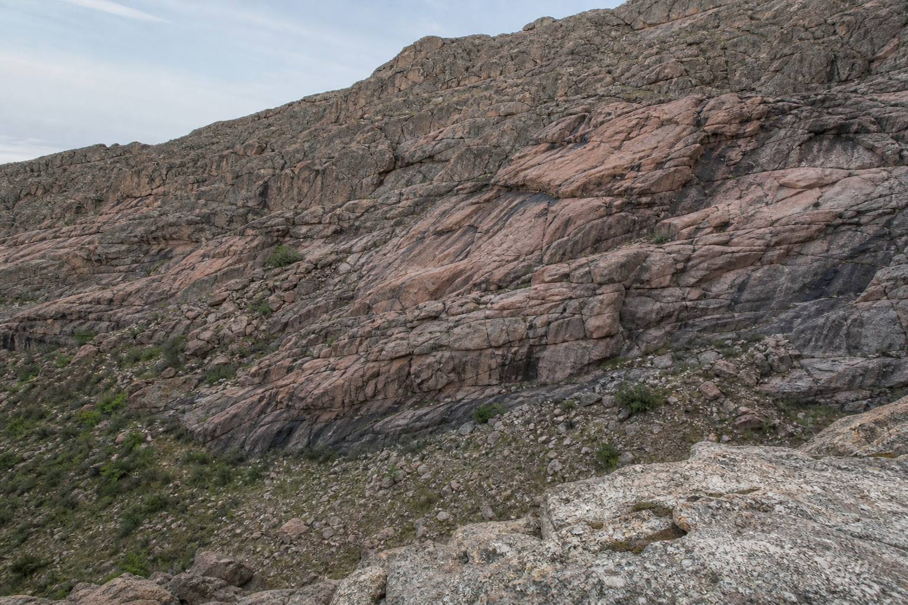
Projet de recherche sur l'architecture crustale sous la Meseta orientale marocaine révélée par les isotopes Sr-Nd : nouvelles données sur les granitoïdes varisques de Beni Snassen et compilation régionale de dix massifs.
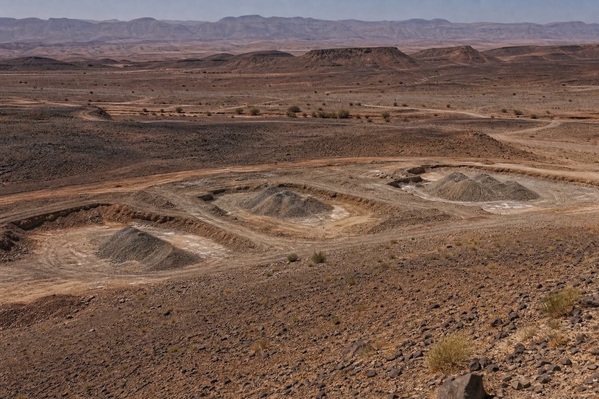
Étude d'impact sur l'environnement du projet d'ouverture de trois carrières alluvionnaires provisoires au niveau des communes de Talsint et Bouanane, province de Figuig, pour l'extraction temporaire de matériaux de construction.
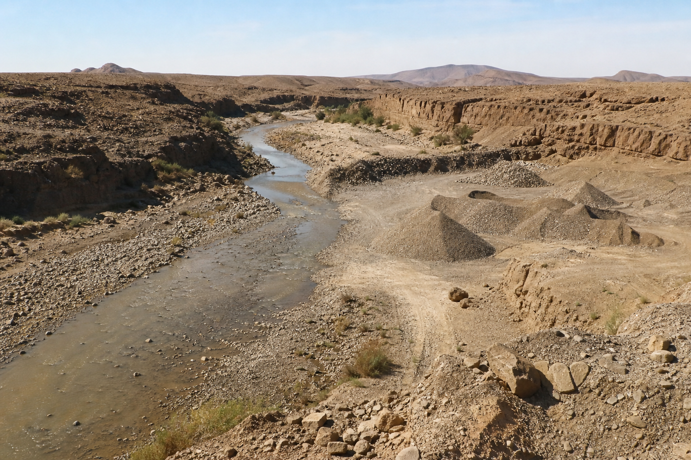
Étude d'impact sur l'environnement du projet d'exploitation d'une carrière alluvionnaire pour l'extraction temporaire de matériaux de construction sur l'Oued Belmini et l'Oued Oglat Oulad Nasseur, commune de Tendrara, province de Figuig.
Contact
Notre équipe est prête à vous accompagner dans vos projets de géosciences, environnement et ingénierie.